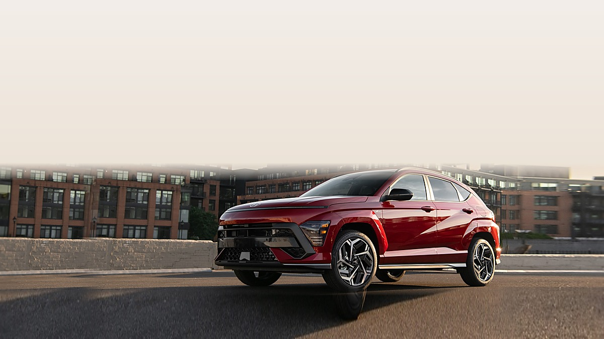
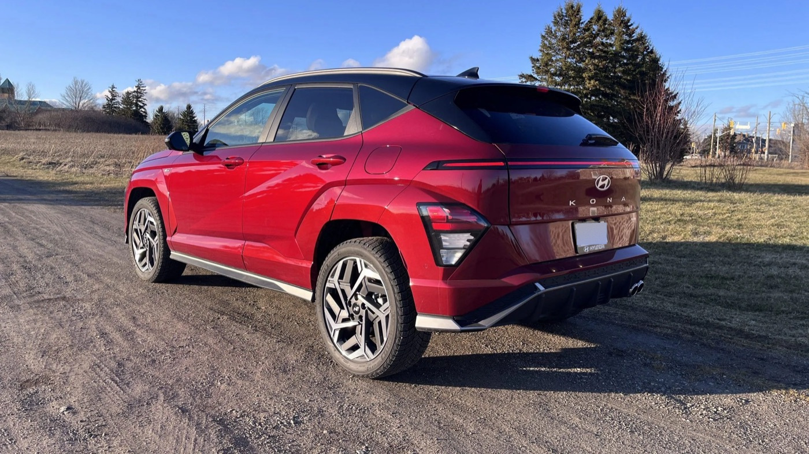

Engine2.0T
276-hp turbo four
2.0-liter turbocharged four-cylinder. Rated by Hyundai at 276 horsepower, with a brief overboost lifting torque to 289 lb-ft when you flatten the throttle.
Looking for a Kona N near San Diego? At Dalton Hyundai National City, you can find Hyundai's turbocharged, track-tuned small SUV, right here at 3150 National City Blvd, right off I-5 between downtown San Diego and Chula Vista.
See live inventory at hyundaidalton.com and book a test drive.

The Kona N isn't for drivers who want a basic commuter. It's for those who want a hot SUV.
It's Hyundai's N-division take on the Kona: a small SUV built to be quick and sharp through corners while still hauling people and gear like a crossover should. Here's what the N badge gets you:
The Kona N is a low-volume performance model, so stock moves fast. See exactly what's on the lot today at hyundaidalton.com, or call (619) 452-3217 for a specific color or build.
Want to see a Kona N in person? Browse current inventory at hyundaidalton.com, then call (619) 452-3217 to hold one for a test drive before you make the trip in.
Note · Inventory, trims, and specifications change as units arrive. EPA fuel-economy figures should be verified at fueleconomy.gov before purchase. Call (619) 452-3217 for what's on the lot today.
Knowing the performance numbers is great, but on a more practical and responsible note, you should know: what does it cost to feed, and is it safe?
Fuel. The EPA rates the Kona N at 20 mpg city and 27 mpg highway, for a combined 23 mpg. Confirm the exact rating for any model year at fueleconomy.gov.
Safety. The standard Kona platform has performed well in IIHS testing, and NHTSA publishes crash-test ratings and open recall campaigns by VIN.
2.0-liter turbocharged four-cylinder. Rated by Hyundai at 276 horsepower, with a brief overboost lifting torque to 289 lb-ft when you flatten the throttle.
Launch control engaged. Hyundai quotes roughly 5.0 seconds to 60 mph with the eight-speed wet dual-clutch transmission, quick enough to embarrass pricier cars.
Built to corner. Electronically controlled limited-slip differential, adaptive dampers, and bigger brakes than any other Kona, the difference between commuting and cornering.
20 city / 27 highway. Tuned for premium gasoline to deliver its rated performance, verify the figure for any model year at fueleconomy.gov.
We pulled the VIN history and checked the NHTSA recall database on each Kona N we took in this summer. If a unit had an open campaign, we cleared it with Hyundai first, a clean recall record before the car ever went up for sale.
Verify the exact EPA fuel-economy and crash-test details for a specific Kona N model year at fueleconomy.gov, iihs.org, and nhtsa.gov, or with our Dalton Hyundai desk before you decide.
When a Kona N lands at National City, our team makes sure everything works as it was engineered to do.
On our most recent arrival, we checked it corner to corner.
That hands-on pass is also why our complimentary alignment check matters more on this car than on the standard commuter Kona. More on that below.
On one trade-in Kona N, we found uneven front tire wear during inspection and replaced the front pair before listing it, nobody should inherit somebody else's track-day habits at full price.
We're an established Hyundai dealership in National City, previously known as Frank Hyundai, and the way we sell is meant to feel like guidance, not pressure.
A performance SUV is a specific kind of purchase, and our team is here to walk you through what the Kona N offers, how it differs from a standard Kona, and whether it fits the way you drive. No runaround, no theater.
That approach shows up in our reviews. Dalton Hyundai National City holds a 4.3-star rating from 2,595 Google reviews, a public track record you can read through yourself before you ever set foot on the lot.
We aim to create a warm, welcoming environment and to guide you every step of the way, whether the Kona N is your first Hyundai or your fourth.

We'd rather tell you this now than have you regret it later. The Kona N is a firm-riding, premium-fuel, manual-feeling machine.
The right Kona is the one that fits how you drive, and sometimes that's the cheaper one.
The right Kona is the one that fits how you drive, and sometimes that's the cheaper one. We'd rather point you to it than sell you hardware you won't enjoy.
Buying the car is one part of the picture; the years after are the other. A performance model deserves a service department that knows the brand, and ours is on-site at the same National City location.
Our service department is open Monday through Friday 7:00 AM to 6:00 PM and Saturday 8:00 AM to 3:00 PM. Two things we offer make day-to-day Kona N ownership easier:
Why does the free alignment check matter so much on this car specifically? The Kona N rides on summer-biased performance rubber and a sport-tuned suspension.
The people who sell you the Kona N are the same store you'll come back to for maintenance, sales, service, and parts all under one roof in National City.
Catching a half-degree of toe before it eats $800 worth of rubber is precisely the kind of thing a complimentary alignment check pays for itself on.
If you're cross-shopping inside the Kona family, and you should, here's the honest breakdown of where your money goes.
| Specification | Standard Kona / Hybrid Comfort & mpg | The hot one Kona N Performance & handling |
|---|---|---|
| Engine | Efficiency-focused four-cylinder | 2.0L turbo, 276 hp (289 lb-ft on overboost) |
| 0-60 mph | Relaxed | ~5.0 seconds (Hyundai) |
| Transmission | Automatic / hybrid | 8-speed wet dual-clutch |
| Fuel | Regular, higher mpg | Premium recommended, 23 mpg combined (EPA) |
| Ride | Comfort-tuned | Firm, sport-tuned, adaptive dampers |
| Best for | Commuting, families, mpg | Enthusiasts, back roads, track days |
The premium on the Kona N buys you capability, not luxury. If you want to be quicker, sharper, and louder, it's worth it. If you want to be quieter, comfier, and cheaper to run, the standard Kona is the smarter buy, and we'll happily sell you that one.
For valuation context on either, Edmunds and Kelley Blue Book both publish trade-in and market-value ranges you can check against your current vehicle before you come in.
Here's the path from search to keys.
If you're trading in, bring your title or payoff details and your registration.
California buyers should also know the DMV collects use tax, title, and registration fees on top of the sale price; the current fee schedule is published at the California DMV so there are no surprises when you sign.
We'll walk through the out-the-door figure line by line before you commit to anything.
Before you commit to any dealer, especially on a performance model, it's fair to ask whether they're legit. Dalton Hyundai National City is an established Hyundai dealership, previously known as Frank Hyundai, with a 4.3-star rating from 2,595 Google reviews.
That's a public record you can read through before you decide where to buy. We sell and service Hyundai vehicles right here in National City, everything in one place.
Verify · EPA fuel-economy figures and California registration fees change. Re-verify mileage at fueleconomy.gov, safety and recalls at iihs.org and nhtsa.gov, and current fee schedules at dmv.ca.gov before you buy.
We are at 3150 National City Blvd, National City, CA 91950, an easy drive for shoppers across San Diego County.
Buyers come to us from National City, San Diego, Chula Vista, El Cajon, Kearny Mesa, and Imperial Beach, all within a short hop of our location on National City Blvd.
From the South Bay you're a few minutes up the I-5; from El Cajon or Kearny Mesa, the 805 and the 8 bring you right in. If you've been hunting a Kona N anywhere in the metro, we're a convenient stop right off the freeway.
| Department | Mon–Fri | Saturday | Sunday |
|---|---|---|---|
| Sales | 9:00 AM – 8:00 PM | 8:00 AM – 8:00 PM | 10:00 AM – 6:00 PM |
| Service | 7:00 AM – 6:00 PM | 8:00 AM – 5:00 PM | Closed |
| Parts | 7:00 AM – 6:00 PM | 8:00 AM – 3:00 PM | Closed |
One of the conveniences of buying here: we're open for Sunday sales from 10:00 AM to 6:00 PM, so you can come look at a Kona N on a day most people have free.
Service and parts are closed Sundays, so if you need a question answered by a technician, plan a Saturday-morning visit before the 5:00 PM close.
Reach sales at (619) 452-3217, service at (619) 314-5768, and parts at (619) 604-0487.
Formerly Frank Hyundai, Dalton Hyundai National City has long served drivers throughout San Diego, Chula Vista, El Cajon, Kearny Mesa, and Imperial Beach, led by General Manager Cedric Butler, with sales managed by Sergio Martell and Mark Moore.
We walk every Kona N corner to corner, inspecting the front tires for the inner-edge wear that aggressive cornering can cause.
We run the eight-speed DCT through its drive modes to confirm launch control and rev-match engage cleanly, and verify the N Grin Shift overboost button.
We pull the VIN history and check the NHTSA recall database, if a unit has an open campaign, we clear it with Hyundai first.
2.0-liter turbo four rated by Hyundai at 276 hp, with 289 lb-ft on overboost and a 0-to-60 of about 5.0 seconds with launch control.
Eight-speed wet dual-clutch transmission, electronically controlled limited-slip differential, adaptive dampers, and bigger brakes than any other Kona.
EPA 23 mpg combined (20 city / 27 highway), premium gasoline recommended for rated performance.
Sales Mon-Fri 9 AM-8 PM · Sat 8 AM-8 PM
Sunday 10 AM-6 PM
Service Mon-Fri 7 AM-6 PM · Sat 8 AM-5 PM
Sales (619) 452-3217
Service (619) 314-5768
Parts (619) 604-0487
3150 National City Blvd, National City, CA 91950.
We stock the Hyundai Kona N, with availability changing as units arrive, it's a low-volume performance model, so inventory moves quickly.
Check current stock at hyundaidalton.com or call (619) 452-3217 for what's on the lot today.
Hyundai rates the Kona N at 276 horsepower from its 2.0-liter turbocharged four-cylinder, with a brief overboost to 289 lb-ft of torque.
Hyundai quotes a 0-to-60 time of about 5.0 seconds with the eight-speed dual-clutch transmission.
Hyundai recommends premium gasoline for the Kona N to get its rated performance.
The EPA lists it at 23 mpg combined (20 city / 27 highway); you can confirm the figure for any model year at fueleconomy.gov.
It depends on how you drive. If you want quickness and sharp handling and don't mind a firm ride and premium fuel, the Kona N is worth the premium.
If you mostly commute and want better mpg and a softer ride, the standard Kona or Kona Hybrid is the smarter buy, and we'll happily point you there.
3150 National City Blvd, National City, CA 91950, convenient to San Diego, Chula Vista, El Cajon, Kearny Mesa, and Imperial Beach.
Yes. Our sales department is open Sunday from 10:00 AM to 6:00 PM.
Call (619) 452-3217 ahead of time to have a Kona N ready for you.
Every service visit includes a no-charge In-Drive Alignment Check and Tire Check. On a sport-tuned car like the Kona N, a curb hit or a few hard launches can knock alignment out of spec and chew up expensive performance tires.
Catching it early protects your rubber and your wallet.
Dalton Hyundai National City is an established Hyundai dealership, previously known as Frank Hyundai, rated 4.3 stars from 2,595 Google reviews.
Kona N specifications described from Hyundai's published model information. EPA fuel-economy figures vary by model year and should be verified at fueleconomy.gov.
Crash-test ratings and open recall campaigns should be confirmed at iihs.org and nhtsa.gov. California use tax, title, and registration fees should be confirmed at dmv.ca.gov.
The Kona N is a low-volume performance model and inventory changes. For current stock on a specific build, call Sales at (619) 452-3217.
If a question about the Hyundai Kona N at Dalton Hyundai National City is not answered here, call (619) 452-3217 and ask for a sales advisor, or browse inventory at hyundaidalton.com.
Browse live Kona N inventory at hyundaidalton.com, then call our sales team to set up a test drive at Dalton Hyundai National City. We're here to guide you every step of the way.